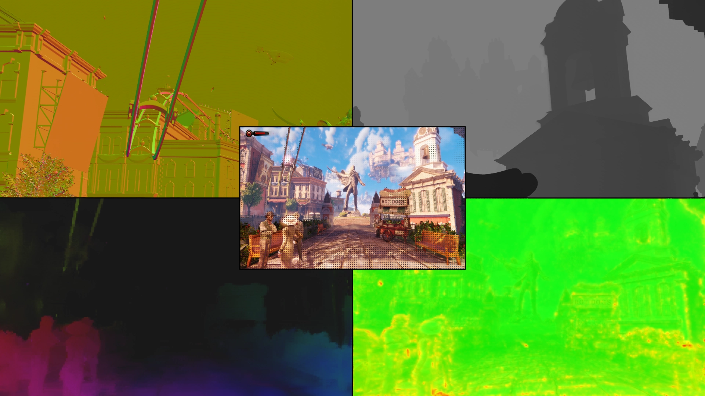
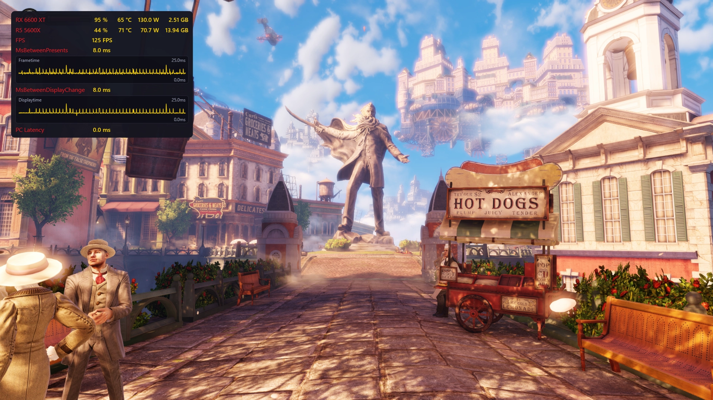
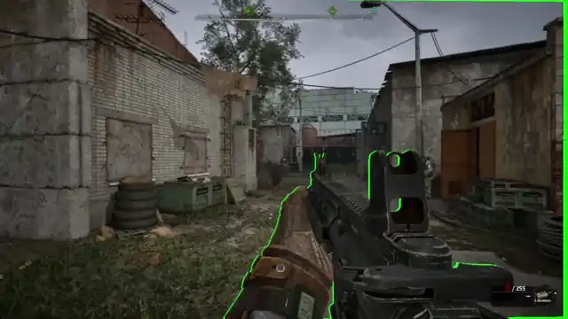
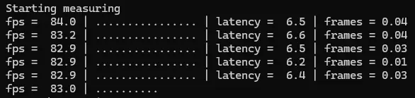

거의 대부분카드(vram 8긱이상)에서 DLSS+MFG(멀티프레임생성)실행하기(실행중인카드 6600xt 8긱임)
기존엔 DLSS5-Feeder가 DLSS5 NR 구현을 위한 브릿지로 역할이던
옵티스케일러를 통해 업스케일러 단독 사용은 물론 프레임생성까지 사용할 수 있게 됨
게임이 업스케일러를 지원하지 않아도 심지어 모션벡터, 색상, 깊이 정보를 제공하지 않아도
이를 실시간으로 계산해 업스케일러를 작동시킬 수 있다고함
제작사 API가 지원하지않는다고 안되던기능을 전부 되게만드는중


심지어 엔비디아 리플렉스2(fg가동시 인풋렉 감소용 저지연기술)도 밴더중립형기술로 개발중인데 꽤나 성능이 올라가는중
그리고 가장 중요한거는
위에 말한 모든기술이 최근 디스크삭제로 분노한 모더들이 만들고있는"플스5 에뮬레이터"에도 다 작동함
아 저게 적법한거는 아님. 그런데 기기문제로 안된다는게 전부 가능해지는중
한줄요약 : 급나누기용 기술 + 독점게임 디스크삭제가 불러온 모더들의 폭력적 개발이 현재 진행중
좀 멀미를 줄일수있는 모드같은거 안나오나 바이오쇼크 재밌는데 멀미때문에 30분이상 못하겠어